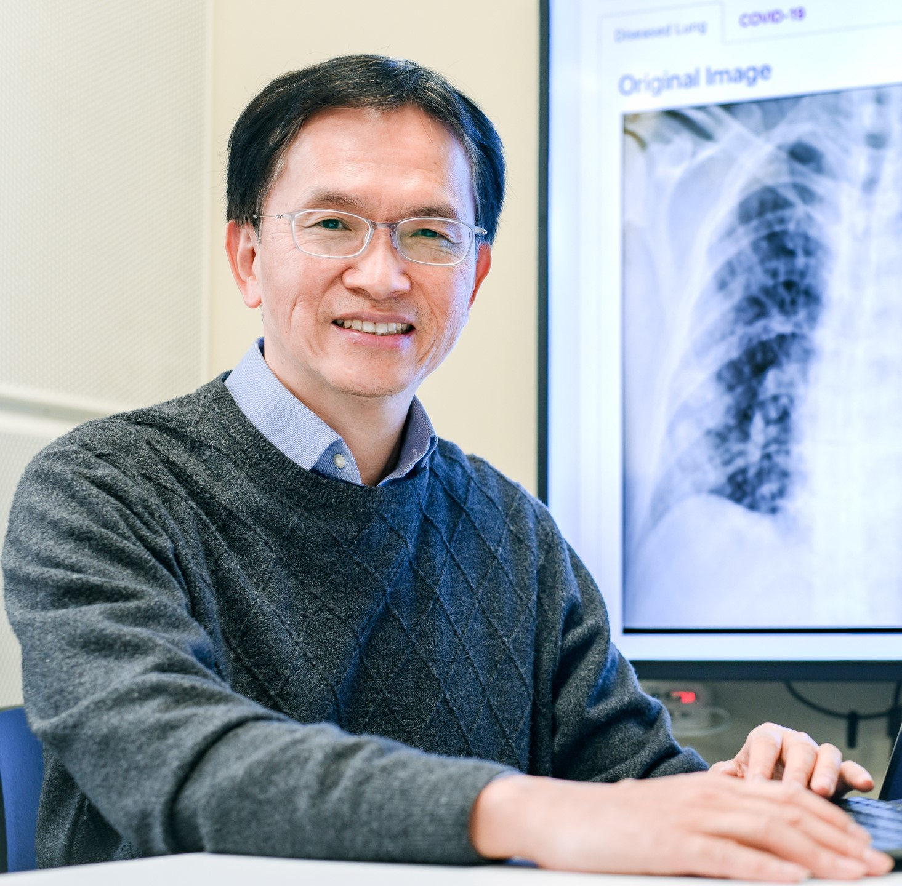
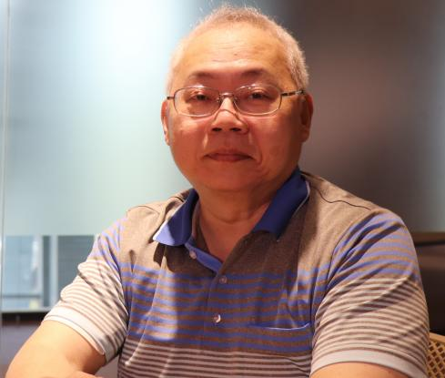

計畫團隊
主持人與協同主持人


Agentic AI 諮詢委員

黃三益 特聘教授
國立中山大學資訊管理學系
專精於資料庫系統、文字探勘、資料探勘、工作流程管理。

許秉瑜 教授
國立中央大學企業管理學系
專精於企業e化管理、資料挖礦、商業智慧與ERP系統管理。

蔣榮先 特聘教授
國立成功大學資訊工程學系
專精於生醫資訊探勘、人工智慧、智慧型計算、雲端醫療照護、癌症與幹細胞研究、巨量資料分析。

劉昭麟 特聘教授
國立政治大學資訊科學系
專精於人工智慧、資料分析與知識探勘、數位人文、計算語言學、自動推理與模型建構。

陳柏琳 特聘教授
國立臺灣師範大學資訊工程學系
專精於語音辨識、資訊檢索、自然語言處理、機器學習。
蔡明順 校務長
台灣人工智慧學校
專精於AI人才發展戰略、數位創新治理、產業AI轉型。
林縣城 副總經理
叡揚資訊
現任叡揚資訊技術服務總處暨創新研發中心副總經理。

梁伯嵩 處長
聯發科技
專精於數位 IC 設計、處理機架構、SoC 架構、新興運算平台架構(AI運算、量子計算、區塊鏈)、科技管理與策略分析。現任聯發科技前瞻技術平台資深處長。
Robotics AI 諮詢委員
莊家峯 講座教授
國立中興大學電機工程學系
專精於計算智慧：模糊系統、類神經網路與深度學習、進化計算；人工智慧與機器學習、智慧型控制、影像處理與電腦視覺、智慧型機器人、AI輔助醫療診斷。
蘇文鈺 教授
國立成功大學資訊工程學系
專精於數位音訊處理、影像視訊處理與壓縮、電腦音樂分析合成、文件影像處理、媒體處理機設計、MPEG-4多媒體標準、數位訊號處理用SoC。

李祖聖 特聘教授
國立成功大學電機工程學系
專精於人工智慧和生物智慧及其應用、人形機器人、基於人工智慧的服務機器人、模糊系統與控制、機電一體化和4WIS4WID車輛。

張禎元 講座教授
國立清華大學動力機械工程學系
專精於機電一體化、機器人、機械振動、動力系統與控制、智慧機械和製造等領域。

葉廷仁 特聘教授
國立清華大學動力機械工程系
專精於動態系統建模與控制、非線性控制理論、以及機器人應用。
曾煜棋 終身講座教授
國立陽明交通大學資訊工程學系
專精於物聯網、5G行動科技、人工智慧服務。

吳炳飛 講座教授
國立陽明交通大學電機工程學系
專精於系統控制、多媒體訊號處理、生醫工程、人工智慧與計算機工程、AI機器人。

楊谷洋 教授
國立陽明交通大學電機工程學系
專精於機器人學習控制與力控制、機器人路徑規劃與校正、VR/機器人整合、生物控制系統。
傅立成 講座教授
國立臺灣大學電機工程學系暨資訊工程學系
專精於社交機器人、智慧家庭、影像偵測和追蹤、虛擬實境、控制理論與應用。

林沛群 終身特聘教授
國立臺灣大學機械工程學系
專精於機器人、仿生工程、機械系統設計、機電整合/運動控制。